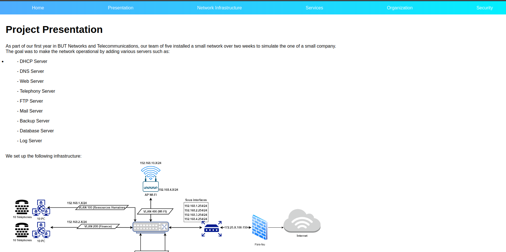
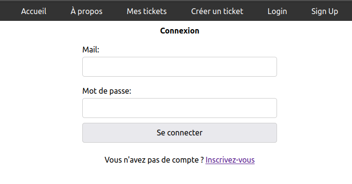
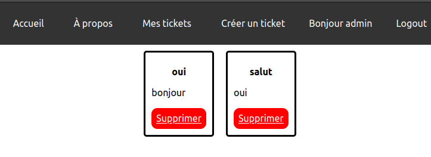
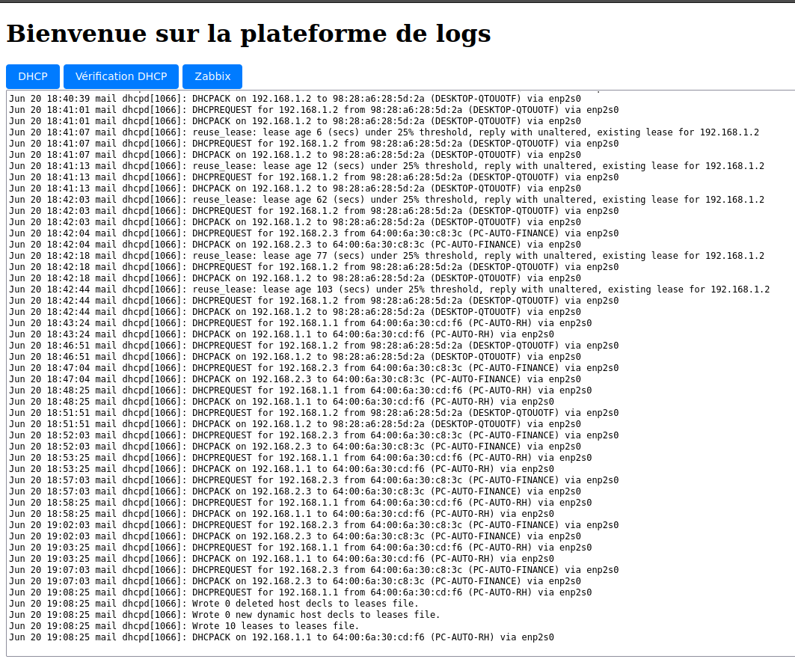

Mise en place d'un serveur web avec bases de données
Introduction
Dans le cadre de la SAE24 nous avons fait différents sites web, un statique pour présenter le projet, un dynamique qui sert de plateforme de ticket et un dernier permettant d'analyser les logs.
Base de données
Pour la base de donnée, nous avons choisi de prendre la SGBD MariaDB.
Site de présentation du projet
Nous sommes tout d'abord accueilli par une page qui permet de choisir entre les trois sites :
Nous pouvons alors aller sur le site de présentation du projet au milieu pour explorer le site sur lequel vous êtes actuellement :
Site de la plateforme de tickets
Ce site permet à nos clients de se connecter ou de se créer un compte, de créer un ticket ou bien de voir ses tickets.
 Site de logs
Ce dernier site permet de regarder et d'analyser les logs du serveur DHCP pour voir les adresses MAC non reconnu par le serveur.
